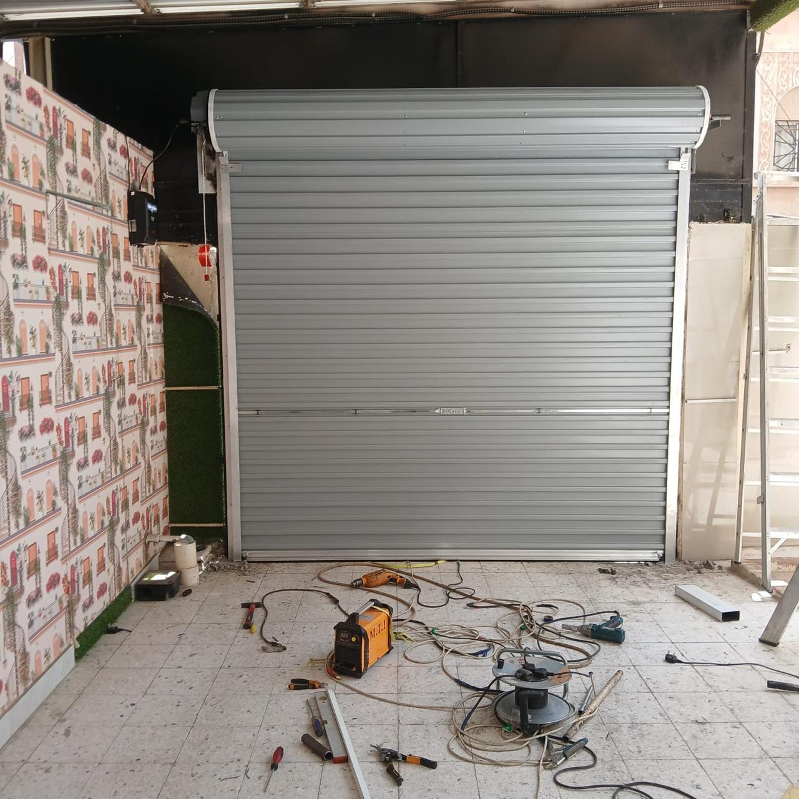
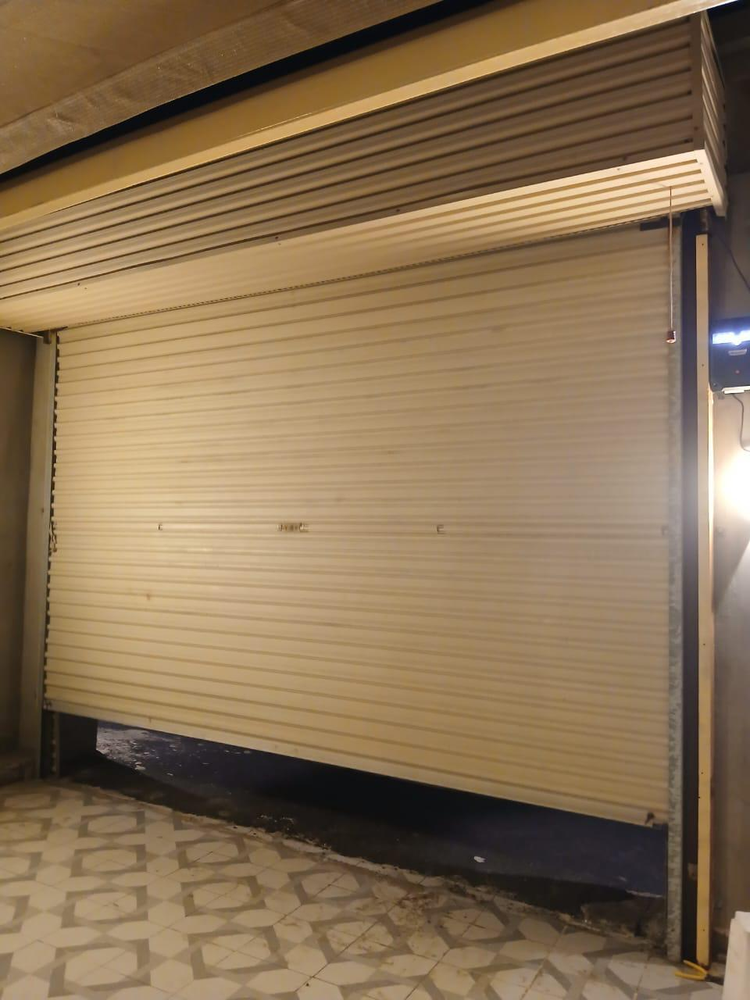
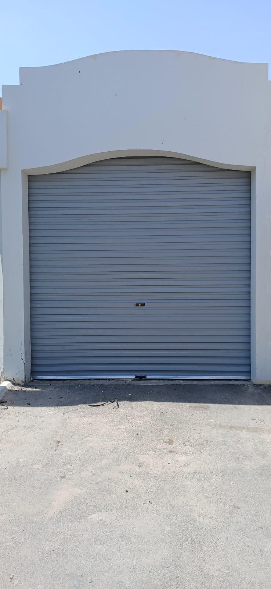
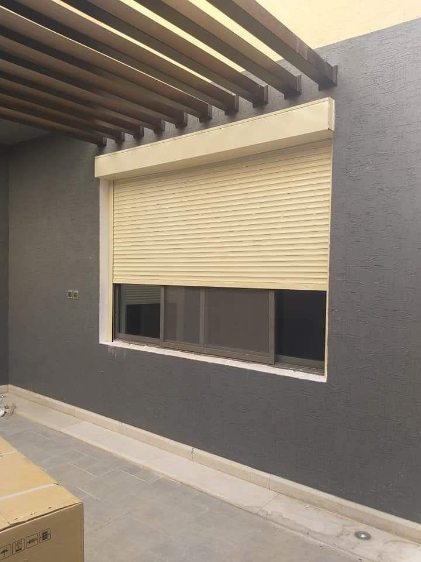
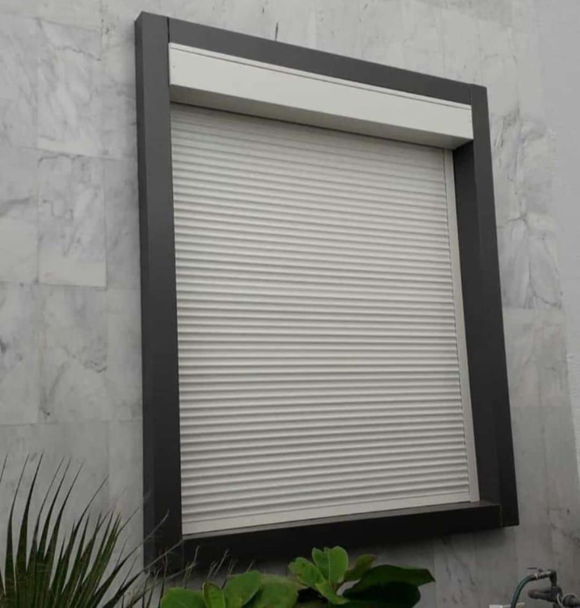
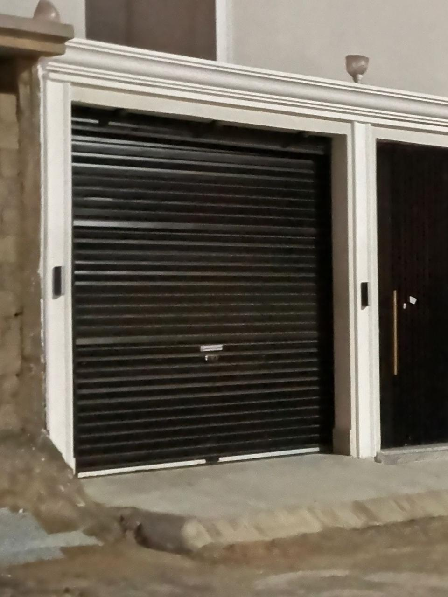
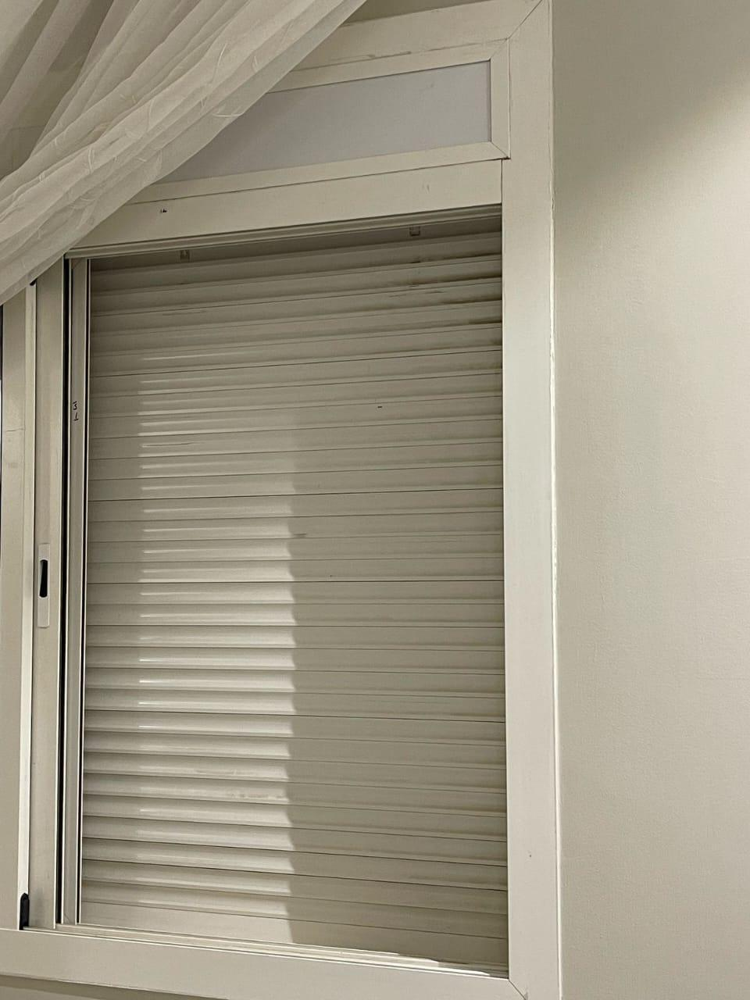
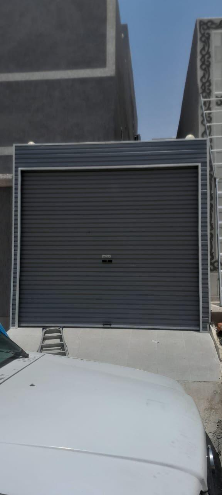
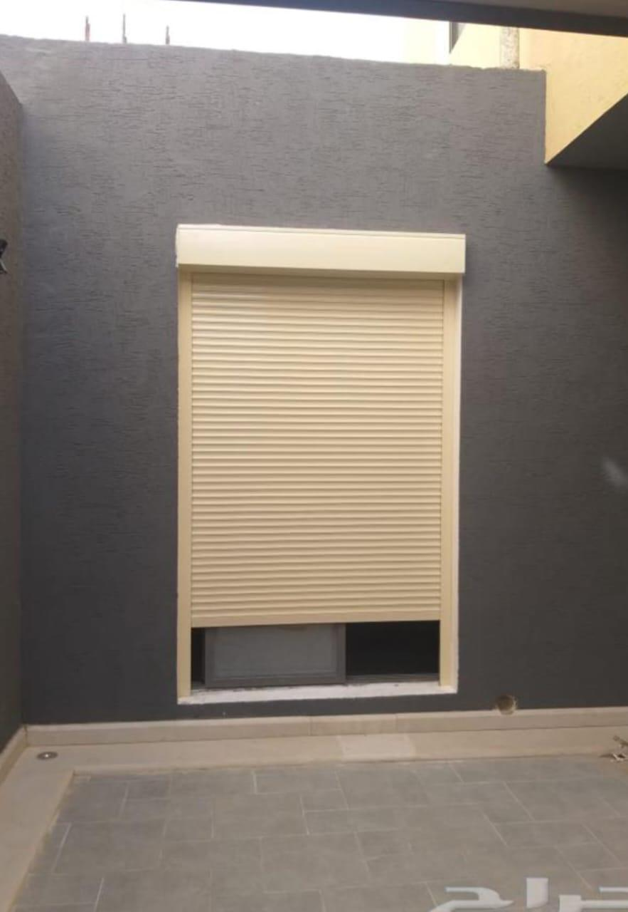

تركيب أبواب كراج
تركيب أبواب كراج جدة، باب كراج أوتوماتيك، أبواب رول، وتجهيز المسارات والموتور حسب مساحة المدخل.

متاح الآن لخدمة جدة 24 ساعة
فني متخصص لصيانة أبواب الكراج، تصليح الشتر الكهربائي، تركيب شتر رول، وبرمجة ريموت الكراج في جدة - المملكة العربية السعودية.
خدمة متخصصة
نخدم العملاء في جدة - المملكة العربية السعودية بأعمال تركيب أبواب كراج، صيانة أبواب أوتوماتيكية، إصلاح شتر كهربائي، وبرمجة ريموت باب كراج. نستخدم صورًا حقيقية من أعمال الشتر والكراج المنفذة لتوضيح جودة العمل، وللتواصل المباشر اتصل على 0567300158.
خدماتنا
تركيب أبواب كراج جدة، باب كراج أوتوماتيك، أبواب رول، وتجهيز المسارات والموتور حسب مساحة المدخل.
صيانة أبواب كراج، إصلاح أبواب كراج، تصليح باب كراج لا يفتح، ومعالجة الأصوات والتوقف المفاجئ بسرعة.
تركيب شتر كهربائي، صيانة شتر كهربائي، إصلاح شتر كهربائي، وأبواب شتر كهربائية للمنازل والمحلات.
برمجة ريموت باب كراج، ضبط لوحة التحكم، فحص الحساسات، وتجربة الفتح والإغلاق بعد الصيانة.
مطابق لما تبحث عنه

طريقة العمل
لماذا نحن
نحدد هل المشكلة من الموتور، السلك، الريموت، الحساس، أو مسار الباب.
شركة أبواب كراج جدة وشركة شتر كهربائي جدة بخدمة واحدة واضحة.
اختبار التوازن والإغلاق والحساسات لتقليل الأعطال المتكررة.
نطاق الخدمة
نخدم أحياء جدة حسب توفر المواعيد، للمنازل، الفلل، المستودعات، والمحلات التجارية التي تحتاج شتر رول أو باب كراج أوتوماتيك.
صور حقيقية من العمل







اتصل بنا
مؤسسة عبدالله لصيانة وتركيب الكراج والشتر. رقم الهاتف: 0567300158. الموقع: جدة - المملكة العربية السعودية.